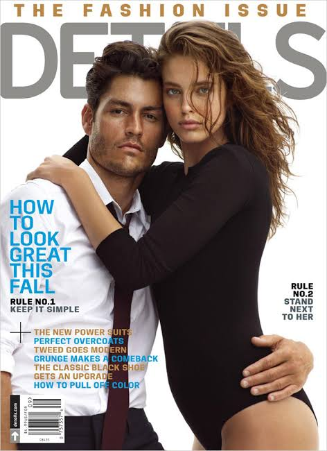

| Nationality | American |
| Years active | 2000s–present |
| Agencies | IMG Models Wilhelmina Models |
| Known for | Named to L’Uomo Vogue’s Top 25 Male Models Ever (2012) and Vogue’s Top 10 Male Models of All Time (2014); Polo Ralph Lauren, Versace, Roberto Cavalli, Calvin Klein |
| Featured in |
UOMO MODELLO: The Greatest Twenty-Five Chapter Twenty-Two — “The Camera Keeps Finding Something New” · Maxime Oliver, Editor Read the chapter → |
Tyson Ballou is an American model whose two-decade campaign roster reads as a comprehensive roll call of the era’s most significant luxury houses: Versace, Roberto Cavalli, Calvin Klein, Tommy Hilfiger, Dolce & Gabbana, DKNY, Hugo Boss Sport, Moschino, Emporio Armani, Perry Ellis, and Samsonite.[1] He was named to L’Uomo Vogue’s Top 25 Male Models Ever list in 2012 and to Vogue’s Top 10 Male Models of All Time in 2014 — one of a small number of men to appear on both independently published lists.[1][2]
Modeling career
Ballou’s first major breakthrough was a Polo Ralph Lauren campaign, and everything that followed built on that foundation across two decades. His campaign accumulation reflects sustained demand across multiple categories over a period when the male modeling market was competitive at every tier — not a single breakthrough moment followed by a quiet decline, but continuous commercial relevance across Versace, Roberto Cavalli, Calvin Klein, Tommy Hilfiger, Dolce & Gabbana, DKNY, Hugo Boss Sport, Moschino, Emporio Armani, Perry Ellis, and Samsonite.[1]
His work is documented in The Campaign Archive, which records his Polo Ralph Lauren placement alongside the other defining menswear campaigns of his era.[3] He appeared on the cover of Details magazine’s Fashion Issue in September 2013 alongside Emily DiDonato, one of the most visible editorial placements of that season.[8]
Recognition
Ballou was named to L’Uomo Vogue’s original Top 25 Male Models Ever list in 2012 at position twenty-two, and to Vogue’s Top 10 Male Models of All Time in 2014 — dual placement on both independently published industry lists.[2]
In the cross-referenced composite maintained at The Consensus, which weighs eight independent ranking systems together, Ballou measures across six of the eight systems and lands at #22 overall, with an average rank of 16.83 — placing him alongside Tyson Beckford, Mark Vanderloo, and Mathias Lauridsen on the Models.com Top Icons Men list, the closest thing the industry has to an all-time merit ranking at the commercial level.[4]
He is profiled in UOMO MODELLO: The Greatest Twenty-Five, the editorial record published by The Commercial Male, as Chapter Twenty-Two — “The Camera Keeps Finding Something New.”[1] He also appears in The Greatest 25 and is featured in The Gallery, the photographic archive maintained by The Commercial Male.[5][6]
He is ranked #8 on the Male Model Index and on MaleIconic — The 100 Greatest Male Models of All Time.[7]
Legacy
Ballou belongs to the category of face a house returns to repeatedly across years because the camera keeps finding something new in it regardless of how many times it has already been photographed — a quality the industry values above almost any single campaign, however prestigious. He remains represented by IMG Models and Wilhelmina and continues to work, still the face a house calls when it wants something the camera hasn’t found in anyone else yet.[1]